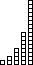
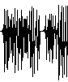
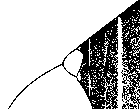

| The unbearable quickness
of doubling: iteration of even the humble number 2 can reach from a
grain of rice to the stars. Or: some history of the invention of chess. |
 |
| Slightly more complicated dynamics can lead to MUCH more
complicated behavior. For such systems, small differences in the
initial conditions can grow into large changes in later
values. This is sensitivity to initial conditions,
one of the attributes of chaos. |
 |
| The test functions for
our study of chaos: the logistic map and the tent map. The logistic map
is defined by a parabola, the tent map by a broken line, both symmetric
about x = 1/2. For both, the height of the maximum point is varied to define a
family of functions. The height gives the family parameter. |
 |
| Given a function f(x) and an initial point x0,
the orbit of x0 is the sequence
x1=f(x0), x2=f(x1), ... .
Here are seven ways to visualize the long-term behavior of the orbit. These
can be used to analyze any sequence of values, including experimental data. |
|
| Here is our software for exploring chaos. |
|
| Graphical iteration produces the orbit
by generating the points (x0,x1),
(x1,x2),
(x2,x3), ... . Starting at x = x0,
draw a vertical line to the graph y = f(x) of the function being iterated, intersecting
at (x0,f(x0)) = (x0,x1).
Next draw the horizontal line from this point to the diagonal line y = x, intersecting
at (x1,x1). Repeat, vertically
to the graph, horizontally to the diagonal. |
 |
| The time series is the plot of orbit values
in order. That is, it is the graph of the points (0,x0),
(1,x1), (2,x2), ... . When many points
are plotted, the ordering can be emphasized by drawing lines connecting successive points.
This is one of the most common ways to visualize temporal patterns in data. |
 |
| A histogram of the orbit is obtained first by
dividing the range [orbit min, orbit max] into bins, represented vertically to
be compatible with graphical iteration. Each orbit point belongs to some bin, and as the
orbit is followed, each point augments the horizontal line drawn from the bin to which the
point belongs. The histogram gives a rough measure of the amount of time the orbit spends
in each region of the range. |
|
| The bifurcation diagram is a record of the
eventual orbit values (plotted vertically) for each of a sequence of parameter values
(plotted horizontally). This gives a record of how the dynamics change as the
parameter varies. |
 |
|